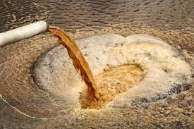
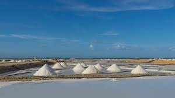

Quais as soluções?
Dentre as mais variadas soluções, ou mesmo na amenização da crise hídrica existem alguns meios que se destacam nessa luta. São eles:
Tratamento de Água de Esgoto: O tratamento de águas servidas (ou tratamento de água de esgoto) é um processo pelo qual os resíduos líquidos, conhecidos como efluentes, são tratados e purificados para minimizar seu impacto no meio ambiente. Isso envolve a remoção de substâncias tóxicas, poluentes e contaminantes presentes nos efluentes, utilizando uma combinação de processos físicos, químicos e biológicos. O objetivo é garantir que a água residual seja tratada adequadamente antes de ser descarregada em corpos d'água ou até mesmo reutilizada, contribuindo para a proteção dos recursos hídricos, preservação do ecossistema e redução no uso de água potável para processos como irrigação, refrigeração, limpeza, descarga de sanitários. Entre outros.
Dessalinização: A dessalinização é o processo de remoção do sal e outros minerais da água salgada, tornando-a adequada para consumo humano ou uso agrícola. Isso é feito por meio de métodos como a osmose reversa, destilação ou evaporação, onde a água é separada dos sais e impurezas. A dessalinização desempenha um papel crucial em áreas onde a água doce é escassa, permitindo o acesso a fontes alternativas de água potável e contribuindo para suprir a demanda crescente por recursos hídricos em todo o mundo.

Uso de águas subterrâneas:O uso de águas subterrâneas envolve a captação e utilização de água armazenada nos lençóis freáticos e aquíferos subterrâneos. Isso é feito por meio de poços e bombas que extraem a água para diversos fins, como abastecimento doméstico, irrigação agrícola e indústria. As águas subterrâneas são uma fonte valiosa de água, pois geralmente estão protegidas da evaporação e da poluição superficial. No entanto, é importante utilizar esses recursos de forma sustentável, monitorando o nível dos aquíferos e evitando a sobre exploração, a fim de preservar a disponibilidade a longo prazo e evitar a contaminação.

Reaproveitamento de água caseiro: O reaproveitamento de água caseiro refere-se à prática de coletar e reutilizar água dentro de casa para diferentes finalidades. Isso pode ser feito por meio de sistemas simples, como a coleta de água da chuva para irrigação de jardins, a instalação de sistemas de filtragem para reutilização da água do banho ou da máquina de lavar, ou mesmo o uso de água de reuso para descargas de vasos sanitários. O objetivo é reduzir o consumo de água potável e minimizar o desperdício, contribuindo para a conservação dos recursos hídricos e a sustentabilidade.
Conscientização: A conscientização sobre o uso responsável de água envolve educar as pessoas sobre a importância de preservar e utilizar a água de forma sustentável. Isso é feito por meio de campanhas de conscientização, programas educacionais, divulgação de informações sobre o ciclo da água, escassez hídrica e técnicas de conservação. A conscientização promove a adoção de práticas diárias, como tomar banhos mais curtos, consertar vazamentos, utilizar equipamentos eficientes em termos de água, reutilizar água e evitar o desperdício. Também incentiva a participação ativa na gestão dos recursos hídricos, incentivando a proteção dos ecossistemas aquáticos e a implementação de políticas públicas voltadas para o uso sustentável da água.
Nossa página atua ativamente no processo de conscientização. Nós acreditamos que a conscientização, educação e informação são ferramentas que podem unir, trazer luz e promover todos os tipos de combate à crise hídrica. Essa é nossa missão!